Knitting and Purling
There are three steps to knitting; the cast-on, the knit or purl stitch, and the cast-off.
The Cast-On
Casting-on is the very first step to knitting. It’s the start of all your stitches and the set-up for the project. There are various ways to cast-on, but here you'll be learning the long tail cast-on method which is arguably the best cast-on.
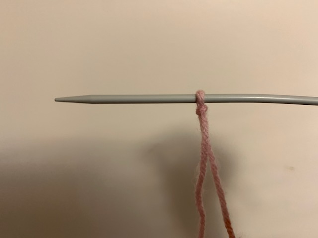
Step 1: Start off with a slip knot. Make sure you leave a long tail behind. Place the slip knot on your needle and hold it in your right hand.
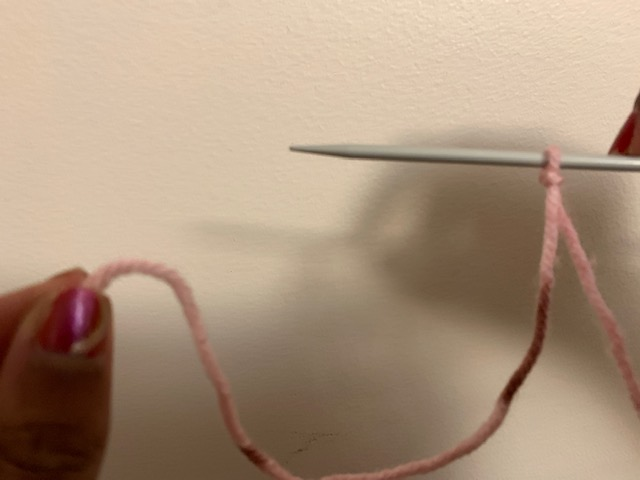
Step 2: You now have 2 strands of yarn coming from your needle. The working yarn (that is attached to the ball) and the tail. Make sure the tail is facing you.
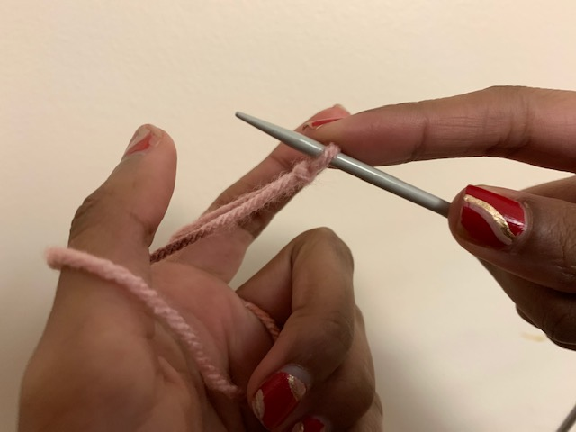
Step 3: Put your thumb and index finger in between both strands. Wrap your remaining three fingers around both yarn strands.
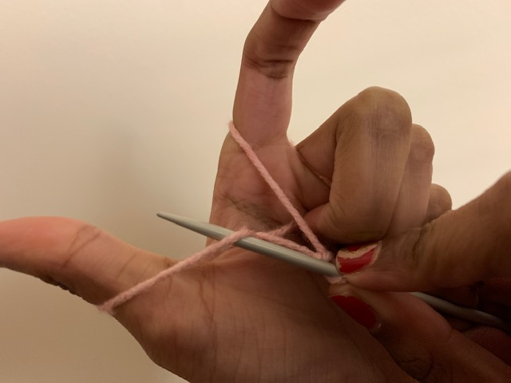
Step 4: Insert your needle under the strand around your thumb.
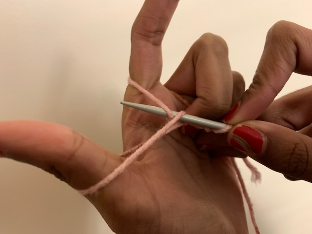
Step 5: Then pick up the yarn wrapped around your index finger.
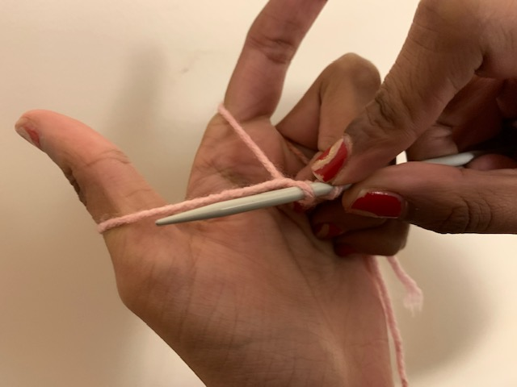
Step 6: Then pick up the stitch wrapped around your index finger.
Put your needle out through the loop around your thumb and take your thumb out. Pull on the strands to tighten your stitch and you've completed one!
Repeat steps 3 - 7 until you've reached you're desired about of stitches. Remember the slip-knot you made at the beginning counts as one stitch.
Knitting
Once you’ve finished the cast-on, you begin the actual making of your piece. Here you can either knit, purl, or do a combination of both to create pattern. First we'll learn how to knit.
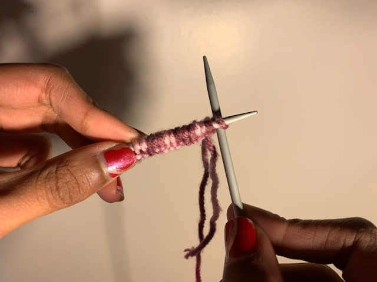
Step 1: Holding your cast-on needle with your left hand, take your second needle and insert it into the first stitch.
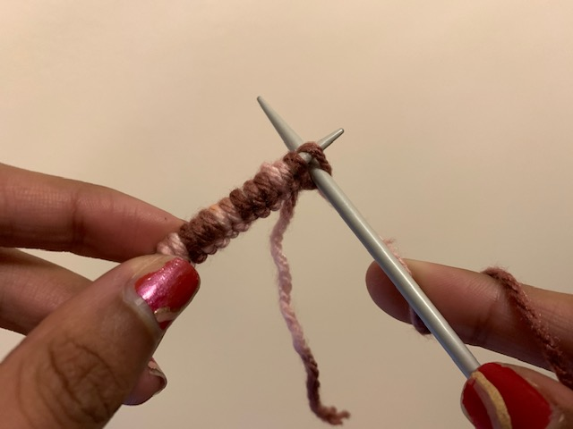
Step 2: Wrap your working yarn around the right needle, from the back to the front. Push down the yarn. It should peek through the stitch.
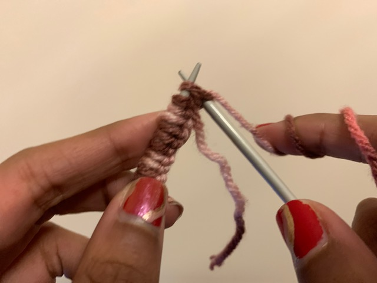
Step 3: Pull down your right-hand needle and pick up the yarn.
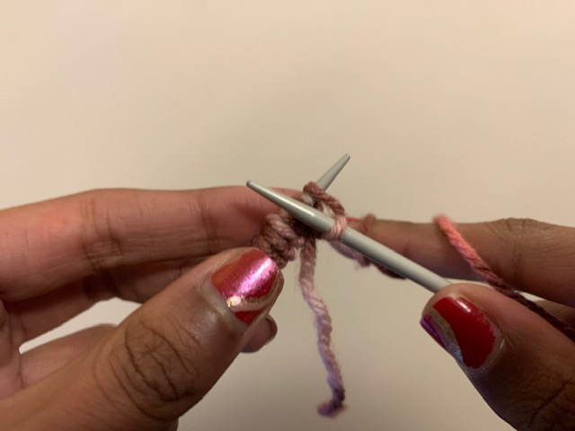
Step 4: Push the right needle through the loop.
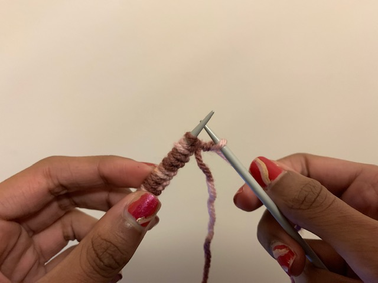
Step 5: Pull away from the left needle.
This will give you your first knit stitch! Repeat these steps for all the stitches in the row. Once you reach the end turn your work and repeat until your desired length.
Purling
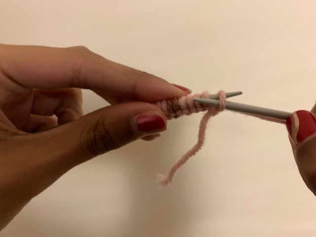
Step 1: Take your needle and insert it into the first stitch from right to left.
Step 2: Wrap your working yarn around the right needle, from front to back. The yarn should be in front of your work.
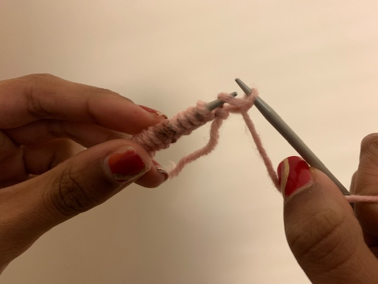
Step 3: Slide the right needle through the loop, bringing along the yarn.
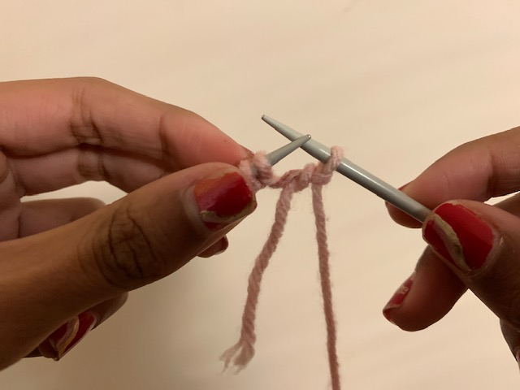
Step 4: Pull away from the left needle taking the stitch off of it and your new purled stitch will be on your right needle.
Repeat these steps until your piece is as long as you want it.
The Cast-Off
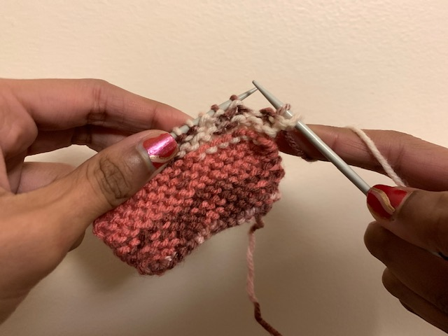
Step 1: Knit or purl two stitches (depends on what stitch you did).
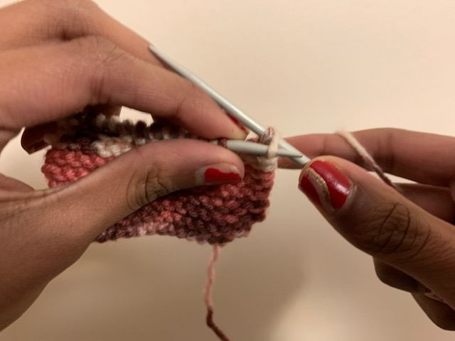
Step 2: Put your left needle into the first stitch.
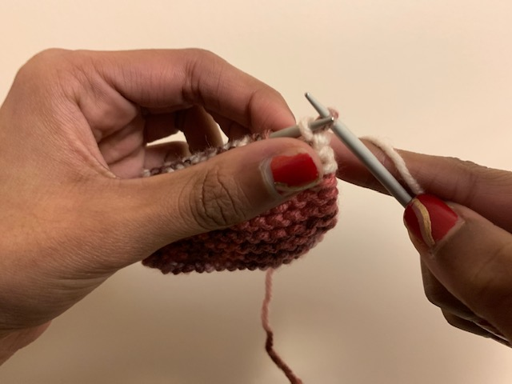
Step 3: Pull the first stitch over the second stitch, leaving one stitch on your right needle.
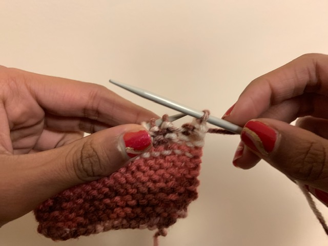
Step 4: This creates starts the cast-off.
Knit/purl one stitch and repeat until one stitch remains on your right needle. Cut a long yarn tail and wrap it around your right needle. Pull your yarn tail through the last stitch to close your work.
And it's done! If you wish you can tie a knot to secure your work, although if done properly your work shouldn't unravel. You can weave in your ends and cut off the tails to neaten your work.